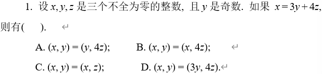
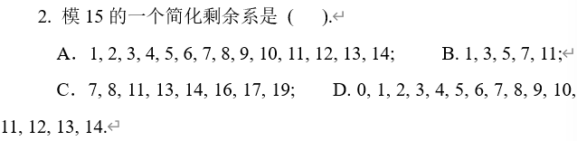

信安数基复习笔记

往年期末考试题目

$(x,y)=(3y+4z,y)=(4z,y)$
故A正确

简化剩余系：与模数互素且不同余
与15不互素：$1,3,5,6,9,10,12,15$
故一个简化剩余系为 ${2,4,7,8,11,13,14}$
也可以写作 ${7,8,11,13,14,17,19}$
故C正确
B. 整数模素数剩余类环都是域，故B正确
C. 整环的定义是没有零因子，3*4=12是0，故C错误
原根存在的充要条件 $m=p^k$ 或 $2p^k$，其中 $p$ 为素数，$k\ge1$
故选D
A. pa=0，错误
B. 费马小定理是 $a^{p-1}=1$，错误
C. 正确
$7x$
$x$的原根数为$\phi(\phi(x))$
22
85=5*17
$x^2\equiv1\mod5$ 和 $x^2\equiv1\mod17$ 的解数之和
分别有两个解（分别是$(1,2)$和$(1,4)$）
故总共有四个解
$|G/H|=\frac{|G|}{|H|}=3$
$GF(16)$是一个阶为16的有限域，则$GF(16)^*$是一个阶为$15$的循环群
在一个循环群中，任意元素的阶是$15$的正约数。也就是说，$GF(16)$中非零元素的可能乘法阶是$15$的正约数
故可能取值为${3,5,15}$
第一步，计算所有模数的乘积$M$
$M=m_1m_2m_3=140$
第二步，计算每个模数对应部分的乘积$M_i$
$M_1=35, M_2=28, M_3=20$
第三步，计算$M_i$在$m_i$下的逆元
$inv_1=3, inv_2=2, inv_3=6$
第四步，计算新的$x$
$x=\sum(a_iM_iinv_i)\%M=17$
通式：余数乘以模余乘以其逆
(1) $(\frac{40}{71})=(\frac{40\%71}{71})=(\frac{40}{71})=40^\frac{71-1}2\mod71=40^{35}\mod71$
$p=71$ 满足 $p=4k+3$
故 $x=\pm a^\frac{p+1}4=\pm40^{18}\mod71=18$或$53$
(2) $(\frac3{119})=(\frac37)(\frac3{17})$
$(\frac37)=3^\frac{7-1}2\mod7=1$
$(\frac3{17})=3^\frac{17-1}2\mod17=-1$
故 $(\frac3{119})=-1$，$x^2≡3\mod119$ 无解
(1) 封闭性：如果$A,B\in GL(3,Q)$，则$AB\in GL(3,Q)$；由于$det(AB)=det(A)det(B)\neq0$，且$AB$元素皆为有理数，因此$AB\in GL(3,Q)$
结合律：矩阵乘法满足结合律，即 $(AB)C=A(BC)$
单位元存在：单位矩阵$I_3\in GL(3,Q)$，且对任意$A\in GL(3,Q)$，有$AI_3=I_3A=A$
逆元存在：对于$A\in GL(3,Q)$，其逆矩阵$A^{-1}\in GL(3,Q)$，因为$det(A^{-1})=\frac1{det(A)}\neq0$
证明$GL(3,Q)$是非交换群，找到反例即可
显然$AB\neq BA$，故$GL(3,Q)$是非交换群
(2) 定义$SL(3,Q)={A\in GL(3,Q)|det(A)=1}$，正规子群需要验证两点
$SL(3,Q)$是子群
封闭性：如果$A,B\in SL(3,Q)$，则$AB\in SL(3,Q)$；由于$det(AB)=det(A)det(B)=1$，因此$AB\in SL(3,Q)$
结合律：矩阵乘法满足结合律，即 $(AB)C=A(BC)$
单位元：单位矩阵$I_3\in SL(3,Q)$，因为$det(I_3)=1$
逆元：对于$A\in SL(3,Q)$，其逆矩阵$A^{-1}\in SL(3,Q)$，因为$det(A^{-1})=\frac1{det(A)}=1$
因此$SL(3,Q)$是子群
$SL(3,Q)$是正规子群
对任意$A\in GL(3,Q),B\in SL(3,Q)$
$det(ABA^{-1})=det(A)1\frac1{det(A)}=1$
因此 $AB^A{-1}\in SL(3,Q)$
故$SL(3,Q)$是$GL(3,Q)$的正规子群
(3)markdown学不会了（恼
(1) 多项式 $m(x)\in GF(2)[x]$是不可约的，当前仅当它不可分解为两个低阶非常数多项式的积
拓欧算法
(a,b)=(b,a%b)
快速幂
CRT
二次剩余
原根
求原根：
- 确定是否存在原根
- 计算$\phi(n)$
- 计算$\phi(n)$的所有素因子
- 检验原根，当前仅当对$\phi(n)$的每个素因子都满足 $g^\frac{\phi(n)}p\neq1\mod n$
.gif)
.gif)
.gif)
.gif)
.gif)
.gif)
.gif)
.gif)
.gif)
.gif)